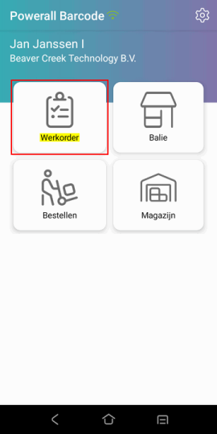
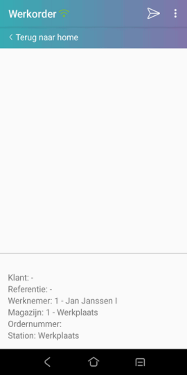
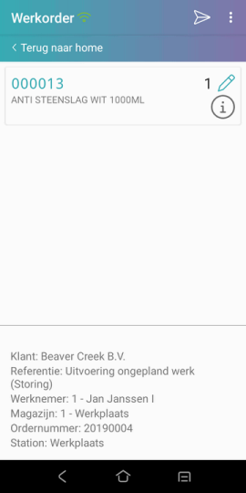
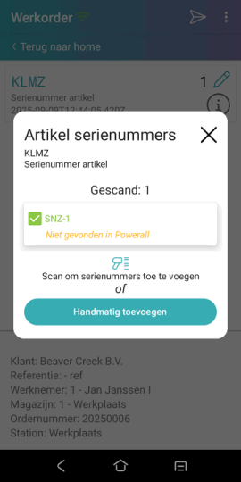

Kies in het menu Werkorder.
Scan vervolgens de barcode op de werkorder of geef deze in.
Als de werkorder niet juist is, wordt bij de klant en referentie Werkorder niet gevonden getoond, vanaf versie 3.24.
Scan de artikelcode ( aantal 1 wordt ingevuld).
Kies eventueel het artikel en wijzig het <aantal>.
Om het volgende artikel in te scannen, herhaal stap 4.

,Klaar met scannen?
Druk op 'verzenden'  .
.
Hiermee wordt de scanning afgerond en doorgezet naar Powerall, als Uitlezen barcode scanneropen staat.
Deze scanning wordt automatisch verwerkt in de werkorder.
Bij afgifte van onderdelen op een werkorder bij een geserienummerd artikel is het mogelijk om direct het serienummer (SN) in te geven of te scannen, vanaf versie 3.27. Het volgende is mogelijk:
Als er onvoldoende voorraad is, verschijnt er een foutmelding: Artikel heeft geen plankvoorraad en serienummers!.
Er kan handmatig een SN ingeven worden.
Bij het verzenden wordt gecontroleerd of het nog SN beschikbaar is, als dit niet het geval is, krijg je een melding.

Een Kleine machine artikel kan niet gebruikt worden.
Als een gebruiker de werkorder aan het wijzigen is, kan de scanning niet toegevoegd worden, omdat deze gelockt is.
Bij de eerst volgende verzending op de Barcode app , wordt deze scanning verwerkt.
Gerelateerde onderwerpen
Copyright ©